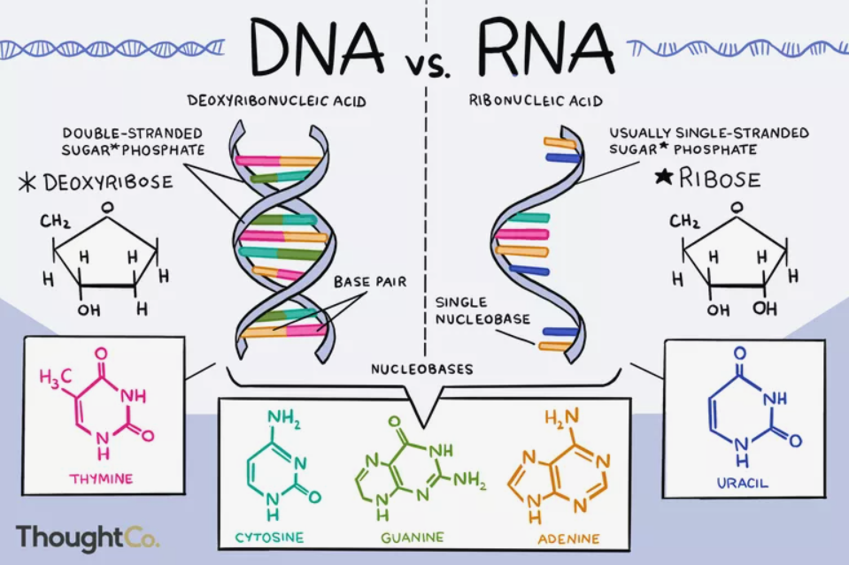
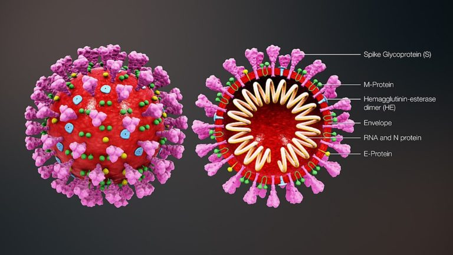
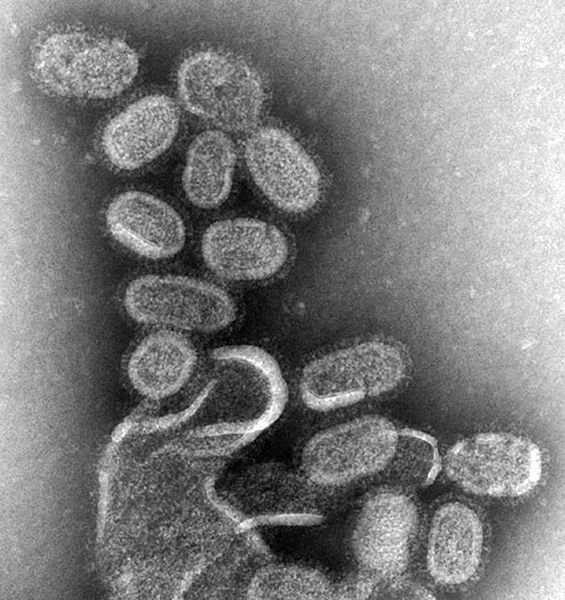

| Feature Article - May 2021 |
| by Do-While Jones |
What can we learn about evolution from viruses?
This month's essay was inspired by a combination of three things:
Before we can address those questions, we need to establish a common foundation so that all our readers know what DNA, RNA, and viruses are, and the difference between a virus and a retrovirus.
These concise definitions come from the Australian Health Ministers' Advisory Council:
|
DNA: deoxyribonucleic acid, a self-replicating material which is present in nearly all living organisms as the main constituent of chromosomes. It is the carrier of genetic information. RNA: ribonucleic acid, a nucleic acid present in all living cells. Its principal role is to act as a messenger carrying instructions from DNA to initiate and control the synthesis of proteins, although in some viruses RNA rather than DNA carries the genetic information. 1 |
Live Science provides us with a somewhat longer, more helpful explanation.
|
Together, RNA, short for ribonucleic acid, and DNA, short for deoxyribonucleic acid, make up the nucleic acids, one of the three or four classes of major "macromolecules" considered crucial for life. (The others are proteins and lipids. Many scientists also place carbohydrates in this group.) Macromolecules are very large molecules, often consisting of repeating subunits. RNA and DNA are made up of subunits called nucleotides. The two nucleic acids team up to create proteins. The process of creating proteins using the genetic information in nucleic acids is so important to life that biologists call it "the central dogma" of molecular biology. The dogma, which describes the flow of genetic information in an organism, according to Oregon State University, says that DNA's information gets written out, or "transcribed," as RNA information, and RNA's information gets written out, or "translated," into protein. "RNA in a basic way is the biomolecule that connects DNA and proteins," Chuan He, a University of Chicago biologist who studies RNA modifications, told Live Science. 2 |
The discussions of the origin of life usually neglect the fact that without both DNA and RNA, life cannot exist. Proving DNA or RNA could have arisen alone by chance is not a sufficient prerequisite for life. Both had to evolve spontaneously.
The difference in the names (DNA and RNA) comes down to whether or not the ribonucleic acid is de-oxygenated or not. Notice the missing "O" in the picture below. (The difference is in the bottom-right corners of the two pentagons.)
 |
|---|
|
Summary of Differences Between DNA and RNA
|
|
While DNA has the instructions on how to make proteins, it is RNA that actually provides these instructions to the ribosomes, organelles in the cell that act as "protein factories." You see, DNA never actually leaves the cell's nucleus. The nucleus instead builds a single-threaded molecule called RNA, which has a copy of the DNA's instructions. Like DNA, RNA also has nitrogen bases that act as a code that the cell can read. The RNA then takes the copy of the instructions and delivers them to the ribosomes. There, RNA helps the ribosomes properly build the correct proteins that the body needs. 4 |
It takes both DNA and RNA for a cell to function and reproduce.
Viral infection isn't as easy as you might suppose. It is a six-step process.
|
How Viruses Infect Cells The basic process of viral infection and virus replication occurs in 6 main steps.
|
|
Scientists are not sure whether viruses are living or non-living. In general, scientists use a list of criteria to determine if something is alive. Let's look at some traits of living things and see if viruses also have those traits. Living things have cells. Viruses do not have cells. They have a protein coat that protects their genetic material (either DNA or RNA). But they do not have a cell membrane or other organelles (for example, ribosomes or mitochondria) that cells have. Living things reproduce. In general, cells reproduce by making a copy of their DNA. Unlike cells, viruses do not have the tools to make a copy of their DNA. But they have found other ways to make new viruses. This is done by inserting virus genetic material into a host cell. This causes the cell to make a copy of the virus DNA, making more viruses. Many scientists argue that even though viruses can use other cells to reproduce itself, viruses are still not considered alive under this category. This is because viruses do not have the tools to replicate their genetic material themselves. More recently, scientists have discovered a new type of virus, called a mimivirus. These viruses do contain the tools for making a copy of its DNA. This suggests that certain types of viruses may actually be living. Living things use energy. Outside of a host cell, viruses do not use any energy. They only become active when they come into contact with a host cell. Once activated, they use the host cell's energy and tools to make more viruses. Because they do not use their own energy, some scientists do not consider them alive. This is a bit of an odd distinction though, because some bacteria rely on energy from their host, and yet they are considered alive. These types of bacteria are called obligate intracellular parasites. Living things respond to their environment. Whether or not viruses really respond to the environment is a subject of debate. They interact with the cells they infect, but most of this is simply based on virus anatomy. For example, they bind to receptors on cells, inject their genetic material into the cell, and can evolve over time (within an organism). Living cells and organisms also usually have these interactions. Cells bind to other cells, organisms pass genetic material, and they evolve over time, but these actions are much more active in most organisms. In viruses, none of these are active processes, they simply occur based on the virus's chemical make-up and the environment in which it ends up.6 |
|
Viruses are intracellular obligate parasites, which means that they cannot replicate or express their genes without the help of a living cell. A single virus particle (virion) is in and of itself essentially inert. It lacks needed components that cells have to reproduce. When a virus infects a cell, it marshals the cell's ribosomes, enzymes and much of the cellular machinery to replicate. Unlike what we have seen in cellular replication processes such as mitosis and meiosis, viral replication produces many progeny, that when complete, leave the host cell to infect other cells in the organism. 7 |
If viruses can't reproduce without a living cell, where did the first virus come from? How did that first virus stumble upon a cell and know to perform the six step process (from adsorption through release) to reproduce itself?
Of course, most of the news today is about the coronavirus family; but few people know much about it.
|
Coronavirus is a large family of enveloped viruses with helical-shaped nucleocapsids. The name 'corona' was given to this virus family as they have crown-like projections on their surface. These viruses infect the respiratory tract of mammals. Coronaviruses cause illnesses ranging from common cold and pneumonia to severe acute respiratory syndrome (SARS) and the Middle East respiratory syndrome (MERS). They can also affect the gut of mammals. The common symptoms of coronavirus infection are a runny nose, cough, sore throat, and possibly a headache. People of all ages are susceptible to this virus. |
 |
|---|
|
Figure 01: Coronavirus There are different types of coronavirus. Generally, coronavirus can be transmitted from animals to humans. When people have weakened immune systems, this virus spreads from person to person through droplets carrying the virus. Therefore, touching or shaking hands with an infected person, making contact with the objects having the virus, etc. can cause the spread of the virus. Therefore, in order to prevent the spreading of this virus, it is necessary to take precautions such as wearing surgical face masks, washing your hands using soap for at least 20 seconds, avoiding close contact with infected people, etc. 8 |
The coronavirus is like the flu. It causes similar symptoms, but is different.
|
Influenza virus (commonly called flu virus) is a single-stranded RNA virus that belongs to the viral family Orthomyxoviridae. It causes an infectious disease called influenza in vertebrates. The common symptoms of influenza infection include high fever, runny nose, sore throat, muscle and joint pain, headache, coughing, and feeling of tiredness. The virus spread through the air from coughing and sneezing. It can also be spread by touching the objects contaminated by the virus and then touching the nose, mouth and eyes. The disease appears two days after exposure to influenza virus. Then it can last for less than a week. In most people, the infection resolves itself. But in certain people, especially in immunocompromised people, young children aged below 5, and adults aged above 65, it can last for several weeks and can cause complications. |
 |
|---|
|
Figure 02: Influenza Virus 9 |
The inspiration for this essay came from an email asking about whether or not retroviruses prove men and apes evolved from a common ancestor, so we need to know what a retrovirus is.
The name, retrovirus, could be misleading. "Retro" suggests the notion of a throw-back. Sometimes sports teams wear retro jerseys, which they haven't worn for years (instead of their regular jerseys) for a single game to evoke some nostalgia. So, one might easily think that a retrovirus has regressed to an older, primitive form. That's not the case. Retroviruses are not throw-back viruses. They are viruses that work "backwards" (that is, opposite to the way most viruses work).
|
retrovirus noun, plural ret·ro·vi·rus·es. any of a family of single-stranded RNA viruses having a helical envelope and containing an enzyme that allows for a reversal of genetic transcription, from RNA to DNA rather than the usual DNA to RNA, the newly transcribed viral DNA being incorporated into the host cell's DNA strand for the production of new RNA retroviruses: the family includes the AIDS virus and certain oncogene-carrying viruses implicated in various cancers. 10 |
So, with all that background information out of the way, we can get down to business.
When this essay was written, it was generally (but not universally) believed that SARS-CoV-2 virus (which causes the COVID-19 disease) came from a laboratory in China. There was still an on-going debate about whether it was accidentally, or intentionally, released from that lab. Sadly, because the scientific arguments are often infected with political bias, they aren't reliable.
It seems to be the rule, rather than the exception, that many scientists are now just pawns of the politicians. We believe the theory of evolution started the trend for power-hungry people to use scientists to give their political opinions credibility. Where one stands on issues such as evolution, global warming, fracking, wearing masks, and vaccinations, can often be predicted by knowing the political party affiliation of the person taking the stand. If these issues were purely scientific, then they would be believed, or rejected, evenly across party lines. The fact that positions on these issues are stated in political party platforms is proof that the "science" behind them is politically driven.
One of the few things that everyone agrees upon is that there are now several strains of COVID-19, and that those strains evolved naturally. It is certainly true that, because of duplication errors that often happen during reproduction of viruses, there are differences in the resulting strains. From a Darwinian point of view, some of those strains might be "better" than others, and the better ones might be more likely to win the battle for survival and become more dominant in the population.
That's really no different than recognizing that some horses are faster than others, as was proved earlier this month in the Kentucky Derby. 11 But horses have not evolved wings to become like Pegasus, even though that would help them win races. They are still horses; and the COVID-19 variants are still coronaviruses. The important issue is whether or not natural variations can lead to new kinds of living things--and science proves that they can't. Variations in existing species have never been observed to create living things with novel characteristics in nature. Some horses might naturally develop differently colored hair--but they don't naturally grow wings.
While Science Against Evolution will not take a stand on whether or not COVID-19 was created in a Chinese laboratory, we will make this observation: If it was created in a laboratory, it was created by a designer on purpose. If it was created in a lab, it was fashioned by taking an existing virus and modifying it. It wasn't made from scratch.
Regardless of whether or not COVID-19 was created in a lab, it is certainly true that skilled technicians certainly could have done it; but that does not prove that they did do it. Possibility does not prove actuality. Evolutionists and creationists alike seem to forget this. Even if an evolutionist proved that apes and humans COULD have evolved from a common ancestor, it would not prove that they DID. Even if a creationist proved that God has the power to create life, it would not prove that He did. Proving that something is possible does not prove that it actually happened.
This month's email column addresses the claims that similar retroviruses in human and chimp genomes could have been inherited from a common ancestor. Even though it is possible, that doesn't prove that they actually were inherited from a common ancestor. It is possible that they were put there by a common designer; but possibility isn't proof that retroviruses actually were put in DNA by a designer.
"Where did it come from?" is an ambiguous question. It could mean, "Where was the location of origin?" That's not the important question we are asking. We want to know, "From WHAT did it come from?"
No matter where the COVID-19 virus came from in the geographical sense, it didn't come from nothing.
If it came from a Chinese laboratory, it came from a laboratory where they were experimenting with corona viruses--it didn't come from an athletic shoe factory. If it came from a Chinese market, it came from a bat that had a corona virus--it didn't come from an orange or banana. COVID-19 is a modification (purposeful or accidental) of a virus that already existed there, which was a modification of another virus that already existed, which was a modification of a different virus that already existed. You could say it is viruses, not "Turtles all the way down." 12 Viruses don't arise spontaneously. They come from existing viruses. Where did the first virus come from? Evolutionists believe, without proof, and in spite of science, that the first virus just miraculously accidentally appeared out of nothing.
Just as a biological virus inserts itself in DNA and makes multiple copies of itself which it spreads to other living things, a computer virus inserts itself in a program to cause it to make and spread multiple copies of itself.
Where did the first computer virus come from? It didn't arise when somebody was transferring a file that was accidentally corrupted during the copying process. The first computer virus was created intentionally by two brothers to protect their software from illegal copying by disabling the computer with the illegal copy. 13 They wanted to punish people who deserved to be punished.
That first computer virus inspired evil people to write similar programs which would disable innocent people's computers just for the fun of it. Vigilante justice evolved into vandalism.
Perhaps the first biological virus was created as part of "the curse." 14 We don't take a position on that because it cannot be proved or disproved scientifically. Just as we don't take a position on where the COVID-19 virus came from, we simply insist that it had to come from a preexisting virus. Viruses don't arise from nothing spontaneously. They come from preexisting viruses which have been changed intentionally or accidentally.
| Quick links to | |
|---|---|
| Science Against Evolution Home Page |
Back issues of Disclosure (our newsletter) |
| Web Site of the Month |
Topical Index |
Footnotes:
1
https://consultations.health.gov.au/genomics/national-health-genomics-policy-framework/supporting_documents/National%20Health%20Genomics%20Policy%20Framework%20Consultation%20Draft%20D161361443.PDF
2
https://www.livescience.com/what-is-RNA.html
3
https://www.thoughtco.com/dna-versus-rna-608191
4
https://www.dictionary.com/e/dna-vs-rna-vs-mrna-the-differences-are-vital/
5
Regina Bailey, https://www.thoughtco.com/virus-replication-373889
6
Abigail Howell, https://askabiologist.asu.edu/questions/are-viruses-alive
7
Regina Bailey, https://www.thoughtco.com/virus-replication-373889
8
https://www.differencebetween.com/difference-between-coronavirus-and-influenza/
9
ibid.
10
https://www.dictionary.com/browse/retrovirus
11
Disclosure, June 1999, "The Kentucky Derby Limit", http://scienceagainstevolution.info/v3i9f.htm
12
"Turtles all the way down" is an expression of the problem of infinite regress. The saying alludes to the mythological idea of a World Turtle that supports a flat Earth on its back. It suggests that this turtle rests on the back of an even larger turtle, which itself is part of a column of increasingly large turtles that continues indefinitely. https://en.wikipedia.org/wiki/Turtles_all_the_way_down
13
https://en.wikipedia.org/wiki/Brain_(computer_virus)
14
Genesis 3:17-19